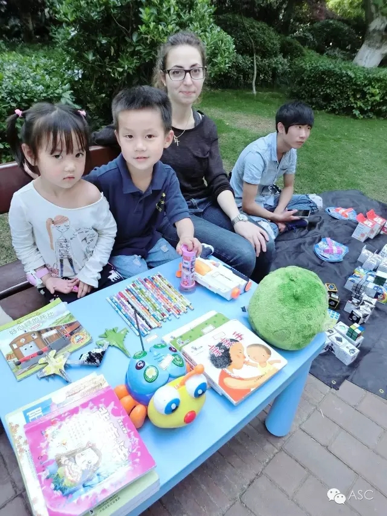
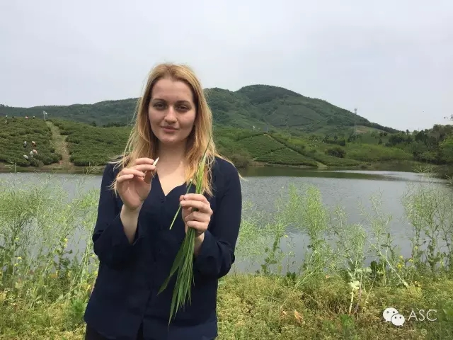

互惠动态
|
|
钱和家庭哪个重要？ 老外这样评论中国人

我们总以为自己是世界上最有家庭观念、最讲究亲情的种族之一，并且深深地为之自豪，但在老外的眼中，却未必如此。
我澳洲的朋友谈起了中国人和澳洲人对家庭的重视。没想到，那几位澳洲朋友说：“你别生气，其实，我们觉得你们中国人并不爱家，并不像你们自己说的这么注重家庭。你们更爱金钱！”
我愕然，于是，我记下了这些真诚的对话：
“无论在澳洲还是在中国当地，你们中国人的确很勤奋，中国人在海外也能比当地人积蓄更多的钱财，但我不认为这是你们中国人有经商的天赋，而是你们比我们更节俭，更能省，是通过降低生活标准来完成的金钱积累。你们平时很少上酒吧，周末也很少度假，甚至周末或假期都不休息。衣服都是从中国买了带过去，因为上海这边更便宜，我甚至看到有上海学生带了很多碗过去。
你们会没日没夜的工作，把孩子都交给老人照管，除了关心孩子的学习成绩外，你们忙得很少和孩子一起玩。圣诞节你们甚至都不休息。
所以，你们华人的孩子尽管学业上很优秀，但他们总是觉得自己很另类，觉得和当地人比起来，父母更关心的是家庭的金钱收入、关心的是他们的学习分数，而不是他们的快乐。”
是的，我知道你要说什么，你们中国人说这是为了孩子，为了下一代多挣些钱，但每一代都说自己赚钱是为了下一代，那么究竟哪一代会真正地使用这笔钱呢？
生命是那么短暂，你们借口为了家庭的未来，而在现在就牺牲了家庭，我不知道这个帐是怎么算过来的，怎么还能体现你们自己很自豪的家庭观念。
你们为了工作，可以忍受长时间的夫妻分离，要在我们眼中，夫妻不在一起三个月以上，基本上就该考虑办离婚了。所以我们被派到海外来，就一定是全家 一起来，我的妻子、孩子都搬到上海来。他们要是不愿意来，我就不可能接受这项工作，家庭比工作更重要呀。我在中国甚至听说过你们的上一辈人，甚至有夫妻几十年都分在两个地方的，到了退休的时候才能生活在一起。这太残酷了。难道你们就不会为了家庭放弃工作吗？工作也还可以再找呀！
我的中国公司里有很优秀的人才，但因为不是上海本地人，家庭就在另外城市，每个月甚至每两个月才能相聚一次，为什么其中的一方就不能放弃工作呢？ 我知道有很多在城市里工作的农民，他们甚至只能一年回家一次，都说是为了家庭在挣钱，可这样的钱再多，又有什么意义呢？
在澳洲，中国人基本都比当地人有钱，但没有人羡慕你们的生活，我认为你们就是金钱的机器，但你们为自己的赚钱爱好涂上了一层家庭的色彩。”
看看我们的周围，多少的人，为了一个房子，牺牲了自己的今天，加班加点地工作，“等买上房子，或还完贷款，就可以轻松了！” 等着吧，房子完了，还有孩子呢！
又有多少孕妇，“等孩子生下来就好了。” 生下来更麻烦，还不如在肚子里，想去哪里，去哪里！有多少小孩子家长，“等孩子上小学了就轻松了，熬吧。” 上学更轻松不了，各种辅导班，还不如幼儿园省事。
多少的家长，在为了一个小升初，牺牲了孩子的童年，周末奔波在各种各样的辅导班的路上，“等考上初中，就解脱了！” 小学完了，发现初中也有辅导班，而且更多，孩子更没有时间玩了！只好等大学再玩了。 “等孩子上了大学就完成任务了。” 大学上完了，找工作一样要操心！ “等孩子工作了，我就没有负担了。” 工作找好了，又开始操心孩子的婚事、房子！“等孩子结婚了，我就不用操心了！” 结婚了，有房了，孩子的下一代又来了！
操不完的心，受不完的累，如此循环往复，我们的视线永远在未来，为了未来，今天积累能量、积累证书，积累票子。结果就是抱怨，我们的视线永远没有活在当下，发现一辈子，没有一天是为自己过的。其实中国人一辈子就是这么过的。

最懂得享受的是美国人，最有信仰的是欧洲人，从出生到死亡都充满竞争和压力的是中国人。
大多数美国人的一生
0—10岁：参加野地考察等各种集体活动；
10—20岁：谈恋爱和追梦；
20—30岁：找份平凡稳定的工作；
30—40岁：终于发现自己的追求，享受有房有车有孩子的生活；
40—50岁：常常在工作压力中度长假；
50—60岁：享受教会生活，旅游；
60—70岁：开始写回忆录，旅游；
70—80岁：安度晚年；
死后：一般进公墓。
大多数欧洲人的一生
0—10岁：参加学校乐队，学习古典音乐等；
10—20岁：组自己的乐队，进行各种尝试；
20—30岁：严重受哥特死亡文化影响；
30—40岁：乐队开始正式走黑色金属路线；
40—50岁：回忆童真，开始过回“彩色”的生活；
50—60岁：安定下来，寻找温情，过小生活；
60—70岁：去教堂总结自己的一生；
70—80岁：与子女一起安度晚年；
死后：安心躺在一大片属于自己的土地上。
大多数中国人的一生
0—10岁：被迫学习各项课外技能，不断考级，多数是为了父母的面子和期望；
10—20岁：死啃如山的书籍，应付如海的考试；
20—30岁：到处投简历，着急自己找不到工作；
30—40岁：成为房奴、车奴；
40—50岁：为孩子的未来操心，省吃俭用，努力存钱；
50—60岁：终于有了自己的生活，却发现马上要退休，又开始担忧退休后怎么办；
60—70岁：花费大部分精力养生，却发现还要养孙子；
70—80岁：终于安定下来度晚年；
临死前：发现原来一块墓地都贵得要死！

关于互惠，您了解得够多么？
请外国学生来家庭照顾孩子，辅导孩子外语？
只了解这些是不够的！
获取更多信息请参考以下方式：
联系ASC：
电话：86-21-61116069(上海中心）
86-25-66065662（南京中心）
全国家庭均可申请！
手机：15601666586（可加微信）
Q Q：3259637585
微信：asc-center
邮箱：info@asc-center.com
网站：www.asc-aupair.com

感谢您对我们的关注